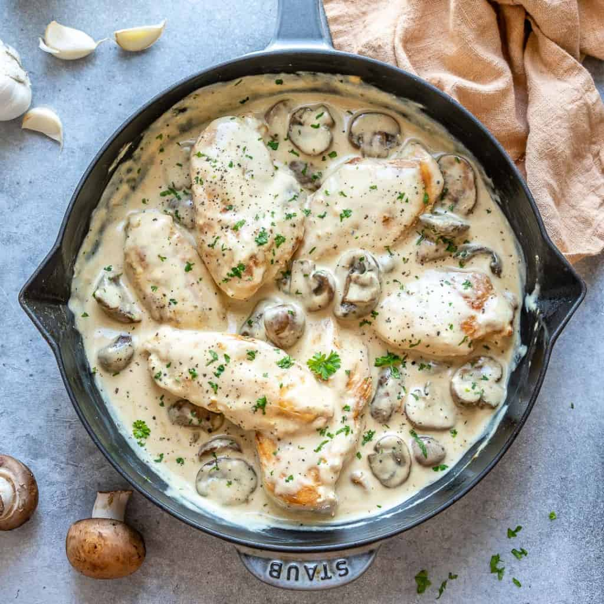

Creamy Chicken Mushroom

Easy, moist, flavorful and aromatic chicken dish in mushrooms and cream sauce! Delicious served with buttered noodles and fresh greens.
Ingedients
- 4 skinless, boneless chicken breasts
- salt and pepper
- 1 tablespoon olive olive
- 1 tablespoon butter
- 200g sliced mushrooms
- 1 large whole onion
- 3-4 garlic cloves
- chicken or vegetable stock
- 1 tablespoon capers
Steps
- Season chicken with salt and pepper. Heat oil and butter in a large skillet over medium heat. Brown chicken in oil and butter for 5 to 7 minutes per side; remove from skillet, and set aside.
- Place onions, garlic and mushrooms in the skillet, and saute until mushrooms are brown and tender. Return chicken to skillet, and pour in stock. Reduce heat to low, and simmer for about 10 to 15 minutes, until chicken is no longer pink and juices run clear.
- Stir in capers, and simmer for another 5 minutes. Remove from heat; serve immediately.